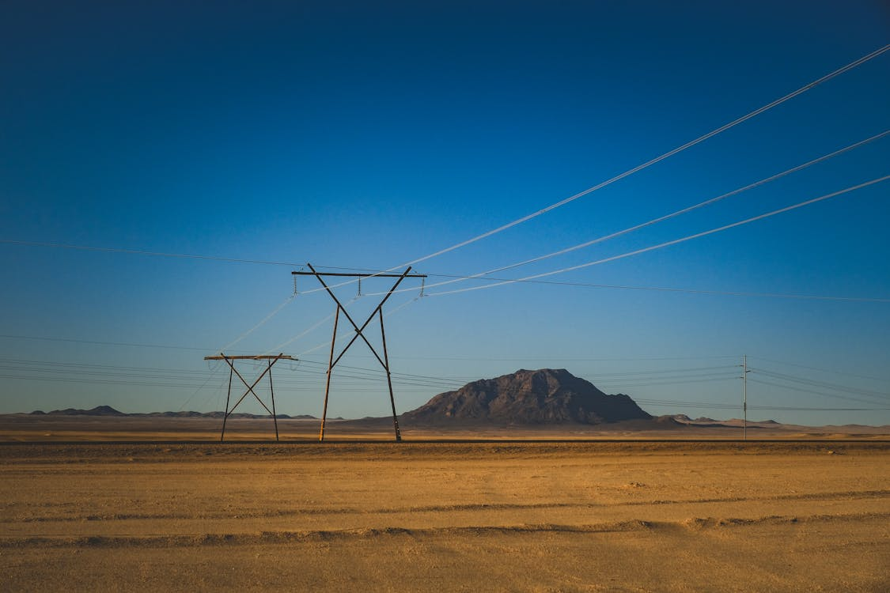

Step 1
Electricity leaves the power plant at high voltage.
After electricity is generated, it is sent over high-voltage transmission lines. High voltage helps reduce energy loss over long distances, making it more efficient to move electricity across regions.

Substations help control, route, and reduce electrical voltage. Transformers make electricity safe and useful for neighborhoods, businesses, and homes.
Electricity leaves the power plant at high voltage.
Transmission lines move power across long distances.
Substations and transformers lower voltage for local use.
Once the voltage is lowered, local distribution lines bring electricity into neighborhoods and individual buildings. From there, outlets, lights, appliances, and electronic devices can use it safely.